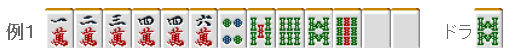
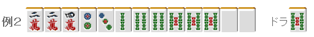
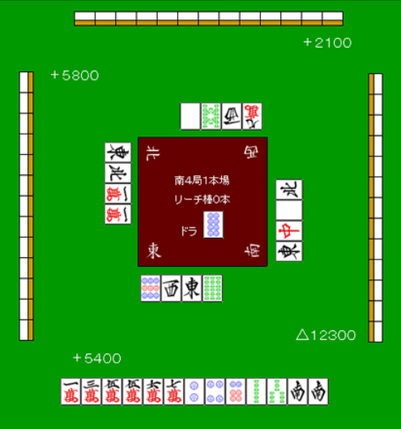

【日本麻雀讲座译文】鸣牌12—后付（2）
【日本麻雀讲座译文】鸣牌12—后付（2） · 原网页
译文与整理说明
保留原中文署名和正文。牌图转录如复用已验收 PDF，逐图保留原候选与像素核对出处。自动校对不等于用户审核。
免责声明：原文段落
以下文章的著作权等各种权利归原作者所有，翻译 By SeventhTG（XD）。如果你喜欢本文并有幸让你产生了转载的想法，请注明原作者、原文地址以及译者，谢谢。原文段落
原文地址：http://beginners.biz/naki/naki12.html ------------------------------------------------------------------------------------ 后付2：原文段落
前一回主要说了有2~3张宝牌的时候，即使是后付也应该积极的鸣牌。 其实还有其他的手牌和场况，采取后付是比较有效的。 ------------------------------------------------------------------------------------ 急需的牌出现的时候 ------------------------------------------------------------------------------------ 原文段落

完整牌例文字与牌编码
左侧标签：例1。 手牌从左到右：1m 2m 3m 4m 4m 6m 4p 5s 6s 8s 9s 5z 5z。 手牌右侧标签：宝牌；标签右侧牌：8s。
比如这样的手牌，上家打出了7索。 毫无疑问，这张牌是我们急需的。 要是这张放过了的话就只剩下2张了（还有一张是宝牌表示牌） 要自己摸到两次4索和7索应该是相当难的。 所以这里就要边张吃进行后付。 原文段落
完整牌例文字与牌编码
左侧手牌从左到右：1m 2m 3m 4m 4m 5s 6s 1z 5z 5z。 右侧副露从左到右：7s（横置）8s 9s。
之后早点处理6万和4饼，留下一张安全牌即可。 另外，要是摸到另一张役牌的话还是把它留下更好。 虽然这里后付了， 更多情况他家也不会扣牌，需要的牌还是会出来。 相反，对手有压力的话也不会贸然进攻。 副露宝牌的面子也不怎么影响防守力 这是完全没有问题的鸣牌。 ------------------------------------------------------------------------------------ 二手准备的后付 ------------------------------------------------------------------------------------ 仅靠役牌的手牌是不好鸣牌的。 但要是有三色或者一气的话会更加有效果。 原文段落

完整牌例文字与牌编码
左侧标签：例2。 手牌从左到右：2m 2m 4m 2p 3p 2s 4s 4s 5s 5s 5s 5z 5z。 手牌右侧标签：宝牌；标签右侧牌：5s。
例2的手牌，3万、4饼、3索出来的话当然是吃，把天枰向三色和役牌倾斜。 原文段落
完整牌例文字与牌编码
左侧标签：例3。 手牌从左到右：1p 1p 2p 6p 7p 7p 7p 8p 2s 2s 2s 6z 6z。
例3的手牌一饼出来的也有碰的一手， 不要太担心自己会搞的自己和不了牌。 摸到6饼或者8饼可以向对对三暗刻变化。 ------------------------------------------------------------------------------------ 无论如何都想和牌的胜负关键 ------------------------------------------------------------------------------------ 在南场，常常会面对无论点数多少都想和牌的情况。 ALL LAST有微弱的差距，和牌即逆转的情况是典型的代表。 例4 原文段落

完整牌例文字与牌编码
中央场况：南4局1本场；立直棒0根。 中央座风标签位置：下方为东（1z），左方为北（4z），上方为西（3z），右方为南（2z）；各标签朝向对应玩家。 中央下部标签：宝牌；标签右侧牌：8p。 四家数值：上方玩家右下侧为+2100；左方玩家右上侧为+5800；下方玩家左上侧为+5400；右方玩家左下侧为△12300。 下方手牌从左到右：1m 3m 5m 5m 6m 7m 2p 4p 6p 3s 7s 2z 2z。 上方、左方、右方手牌各为13张牌背，分别横向、纵向、纵向排列。 上方牌河按画面从左到右：5z 8s 3z ［万子牌，数字无法确认］；四张牌均朝向上方玩家，相对下方手牌旋转180度。 左方牌河按画面从上到下：1z 4z 1m 1m；四张牌均横置，朝向左方玩家。 右方牌河按画面从上到下：4z 5z 7z 1z；四张牌均横置，朝向右方玩家。 下方牌河从左到右：9p 3z 1z 6s。 原图未显示的信息：上方牌河按画面从左到右第4张：可辨为万子牌，数字无法可靠确认。
根据例4的点数情况，等着南出来太过优柔寡断了。 虽然鸣牌之后手牌会有点散，但也要朝着这1500点去。 这个牌能鸣牌的时候都鸣了吧（当然5万的碰是不行的= =） 像这样ALL LAST，拼命地向着和牌前进 要比对手更快的话，就没有被手上的役牌束缚的闲心了。 正是这样，后付成为有效的战术。 （待续）原文段落